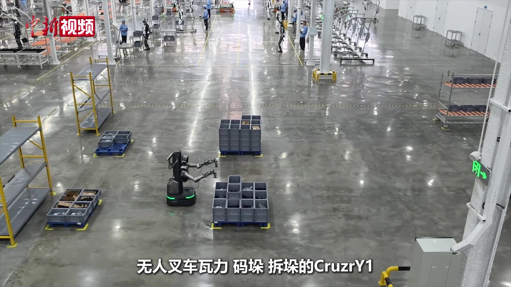
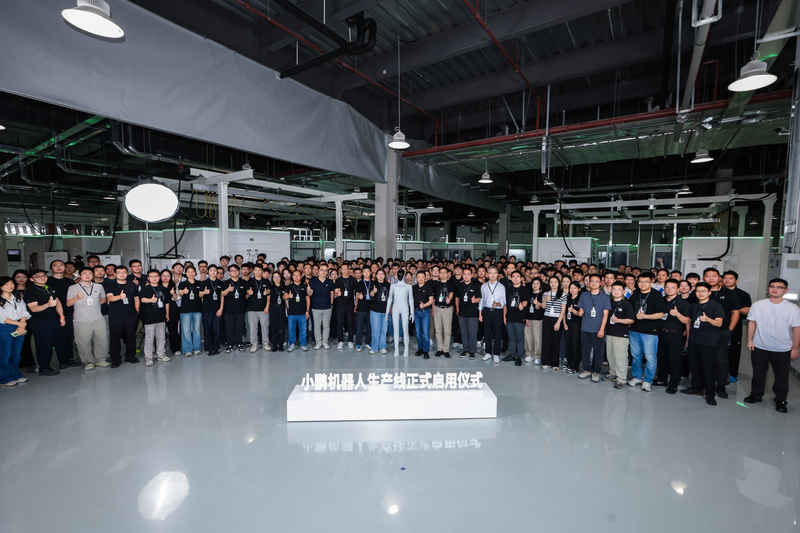

人形脉冲
本周信号很清楚：部委把具身数据与标准摆上日程，产线则以车规制造与万台节拍回答「能不能造」。小鹏 IRON 走下线、优必选柳州超级工厂投产，产能叙事进入可计数阶段；NVIDIA SONIC 顶刊落地则提示运动控制亦进入规模化配方竞争。编辑判断：下一季应盯真机工时、数据闭环与场景复购，而非展台时长。

国内政策
国家数据局：刘烈宏主持具身智能座谈会，推动数据标准建设
9月10日，国家数据局党组书记、局长刘烈宏主持召开具身智能座谈会，中科院自动化所、京东集团、石景山人形机器人数据训练中心、星海图、自变量、北京人形机器人创新中心等代表围绕「数据赋能具身智能发展」发言；副局长夏冰与会。通稿称产业呈现数据驱动特征，对高质量、多样化、大规模数据需求持续增长，将适时推动具身智能数据标准建设并指导地方有序开展相关工作。编辑判断：数据标准若与工信部整机标准、实景实训数据沉淀衔接，将成为批产与出口合规的硬约束，而非孤立文件。
国家数据局
广东征集 2026 年「机器人+」典型应用场景（具身智能）
省工信厅通知面向全省已实景落地的具身智能机器人案例开展征集，覆盖制造、医疗、物流、养老、教育、商业社区、政务文旅、居家康养八大领域，要求案例可规模化复制并配备交付运维团队。申报主体须于9月24日前在「广东省数字工信平台」完成材料上传，地市审核推荐截止10月10日。编辑观点：截止日本期窗口内，实质是把「能演示」倒逼成「能交付、能复盘」的清单；后续应跟踪入选案例是否进入部委推广与采购口径。
广东省工业和信息化厅
工信部就《国家人形机器人产业标准体系建设指南（2026版）》公开征求意见
8月24日，工信部科技司发布《国家人形机器人产业标准体系建设指南（2026版）》（征求意见稿）并公开征求意见，公示期至9月23日（本期窗口内仍有效）。指南提出到2028年建成协调配套的标准体系，在能力测试评估、关键技术、平台系统、场景应用、安全治理等方面完成至少100项关键标准制定。编辑判断：与 №01 标委会「标准周」一脉相承，本轮是把术语、接口、测试与安全伦理写进可执行路线图；企业应关注 WG 分工与自身产品线如何对齐。
工信部
福建：汽车产业与具身智能「同源复用」进入政策讨论
9月11日，省工信厅转载《证券日报》报道：中国电动汽车百人会研究称智能汽车与具身机器人核心技术栈重合度超70%，2026年上半年中国人形机器人出货量超4万台、全球占比97%。文中援引百人会秘书长张永伟观点，具身智能应「生而国际化」，避免先在国内内卷三五年再出海错失定价权与标准话语权。编辑观点：这是地方工信系统对跨行业供应链与出海节奏的政策化转述；对读者而言，关键不在重合度数字本身，而在车规供应链能否转化为机器人良率与售后网络。
福建省工业和信息化厅
国外前沿
Science Robotics：NVIDIA SONIC 以运动跟踪规模化做人形全身控制基座
NVIDIA GEAR 团队论文 SONIC 刊于 Science Robotics（2026，DOI: 10.1126/scirobotics.aed4592；项目页 9 月持续更新）。团队以 1.2M–42M 参数规模、逾 1 亿帧动捕数据与约 2.1 万 GPU 小时训练通用人形运动跟踪控制器，并展示 VR/视频/文本/音乐等多模态驱动及与 GR00T VLA 衔接的 loco-manipulation。Phys.org 9 月9日跟进报道。编辑判断：价值在于把「控制层」也纳入 scaling law 讨论——能否复现仍待独立评测，但已为人形「大脑—小脑」分层提供可引用的一手配方。
NVIDIA
arXiv：ViBe 以视觉行为适配把运动跟踪扩展至感知型全身控制
9月9日提交（arXiv:2609.09918）。ViBe 在既有运动跟踪器上通过预训练视觉编码器与低秩适配器注入外感知反馈，在策略优化下适配路缘行走、跑酷、Repose Cube、全向 loco-manipulation 与躲避球等四类任务，并报告零样本 sim-to-real 与户外/低照/ RGB 干扰条件下的鲁棒性。编辑观点：与 SONIC 的「先 scale 跟踪、再挂上层」路线形成对照——ViBe 强调后训练效率；需等待代码与第三方真机长程数据。
arXiv
arXiv：PGMT 为人形机器人提供感知型通用运动跟踪
9月8日提交（arXiv:2609.08511）。PGMT 先学习通用跟踪与恢复先验，再以运动条件化地形一瞥编码地形感知，允许在保持运动意图前提下偏离参考轨迹；在 Unitree G1 上零样本部署，称可应对最高约 37 cm 障碍并支持遥操作、动态动作跟踪与跌倒恢复。编辑判断：把「平地跟踪」推到复杂地形是工业部署的前置条件；论文价值在统一策略覆盖 locomotion、全身行为与遥操作，但仍需独立验证真实工厂地面的磨损与维护成本。
arXiv
arXiv：TANGO 用全身 VLA 做人形 cluttered 环境语言导航
9 月提交（arXiv:2609.09158；伯克利等）。TANGO 给定自然语言指令与 egocentric RGB，直接预测 29-DoF 关节动作供全身控制器执行；在仿真中通过路径规划、全身运动生成、障碍感知编辑与 RL 跟踪合成训练数据，并在 Unitree G1 上零样本部署 cluttered 室内场景。编辑观点：把导航从「底盘+局部规划」推进到「全身一体 VLA」是方向性样本；瓶颈仍在 sim 合成数据与真实长程成功率之间的鸿沟。
arXiv
重点新闻
本期主条
优必选柳州万台级工业人形机器人超级智慧工厂投产
9月12日，柳州优必选工业人形机器人超级智慧工厂正式投产。新华社称该厂为适配万台级产能的智能制造标杆，按设计节拍每10分钟可下线1台工业人形机器人，生产—测试—仓储—发运全流程数字化，并实现「用机器人造机器人」。中新社同日稿件补充：工厂主要生产 Walker S、Cruzr 系列，优必选创始人周剑表示将联动柳州制造业资源沉淀工业场景具身数据，并面向东盟拓展生态。编辑判断：与 Figure BotQ 的西方节拍形成对照——关键不在发布会形容词，而在后续出厂台数、返修率与场景复购能否支撑「万台」名义产能。
新华社
小鹏 IRON 首台高级通用人形机器人走下线，产线正式投产
9月8日，小鹏宣布人形机器人产线正式投产，IRON 完成产线制造后自主走下线，核心工艺自动化率超 80%，并强调沿用汽车级质量体系。官方称 IRON 具 76 自由度、双手各 21 自由度，搭载三颗 Turing 芯片（有效算力最高 2250 TOPS），计划年底前进入量产，2027 年在中外市场正式交付；同日通稿亦提及 8 月 24 日机器人业务完成超 9 亿美元融资。新华社英文稿 9 月 8 日亦报道产线启动。编辑观点：「走下线」≠「稳定出货」——应把门店/园区首批工时与故障数据，与年底量产口径分开记账。
XPENG

东风「小东」「元仔」从 WRC 展台走向岚图、猛士工厂与 4S 店
9月10日，武汉政务网转载《长江日报》：东风汽车研发总院智能化首席总工程师张振林携人形机器人「小东」与四足「元仔」从 2026 世界机器人大会返汉，下一步将部署至岚图、猛士武汉工厂与 4S 店，主攻汽车生产制造与营销场景。报道强调「一脑多体」架构——将车规级芯片、计算平台、端到端算法与世界模型从汽车迁移至机器人，并称百人会研究指智能汽车与具身智能技术重合度超 70%。编辑判断：车企场景优势在自有试验场；需跟踪工厂节拍内的可用率，而非展会围观人次。
武汉市投资促进局
无锡：具身智能机器人首进高校移动营业厅办理业务
9月12–13 日开学季，无锡商业职业技术学院移动营业厅引入凯龙高科子公司凯奇具身智能机器人办理新生业务，学生现场三四分钟完成开户，缓解 5700 余名新生集中报到排队压力；企业称另 4 台将陆续投放其他高校，并推进工业与化工巡检、环保检测等场景。编辑观点：这是典型的 B 端服务机器人落地样本——价值在可计量排队时长与故障率；不宜把校园「尝鲜」直接外推为 C 端家庭市场成熟。
无锡市人民政府
宇树开源 UnifoLM-WLA-1.0 具身基座模型并上线 GitHub
9 月 10–11 日，宇树宣布完全开源 6B 参数 UnifoLM-WLA-1.0，项目页称单模型统筹 64 个桌面与全身移动操作任务，训练数据约 2500 小时真机数据，并在多项具身推理评测中宣称领先开源模型；GitHub 仓库 unitreerobotics/unifolm-wla 已创建。编辑判断：开源声明与权重/数据集是否同步可下载，是本期最大变量——对产业而言，若真机评测可复现，将加速「一脑多形」竞争；若仅有项目页而无权重，则仍属叙事阶段。
Unitree Robotics
新华网：机器人进入「打工期」，真实订单检验企业成色
9月10日新华网稿称，2026 世界机器人大会主题「人机共生，产需共融」折射产业风向：机器人需在真实工况证明价值，资本趋于理性后，出货量、产线工时与复购率正取代炫酷动作成为硬通货。稿件援引 IDC 数据称 2025 年全球人形机器人出货约 1.8 万台，2026 年上半年仅中国出货已超 4 万台，并点名多家企业的量产与行业部署案例。编辑观点：与本周优必选、小鹏产线新闻同频——「打工期」是否成立，取决于是否有第三方可审计的工时与故障统计，而非媒体形容词。
新华网